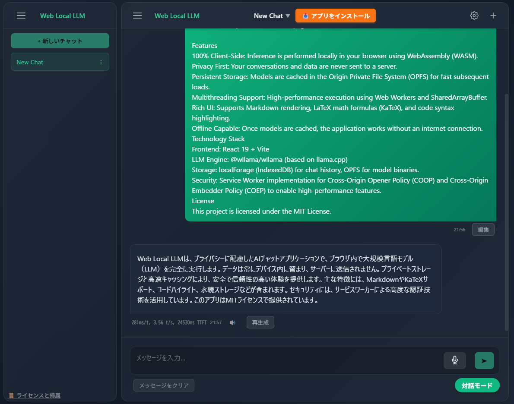
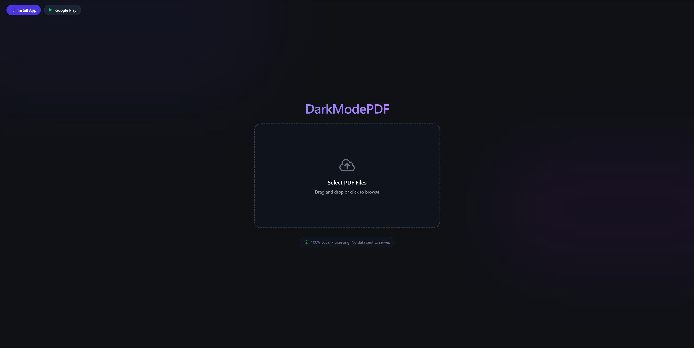
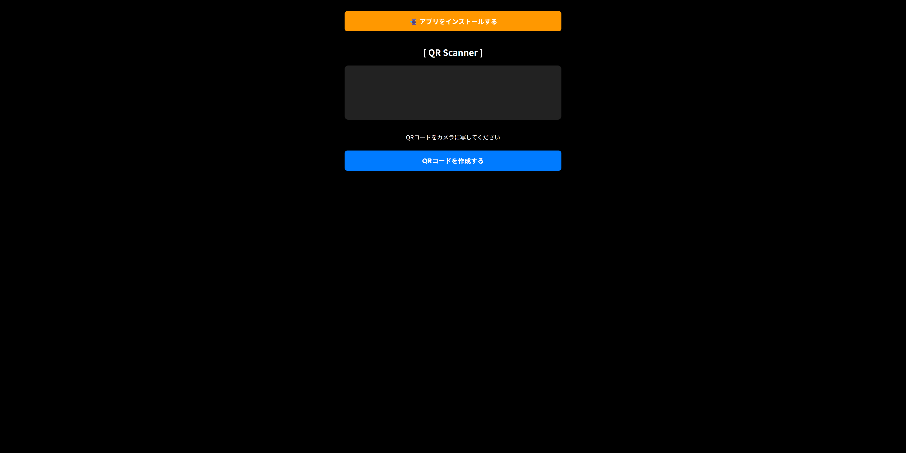
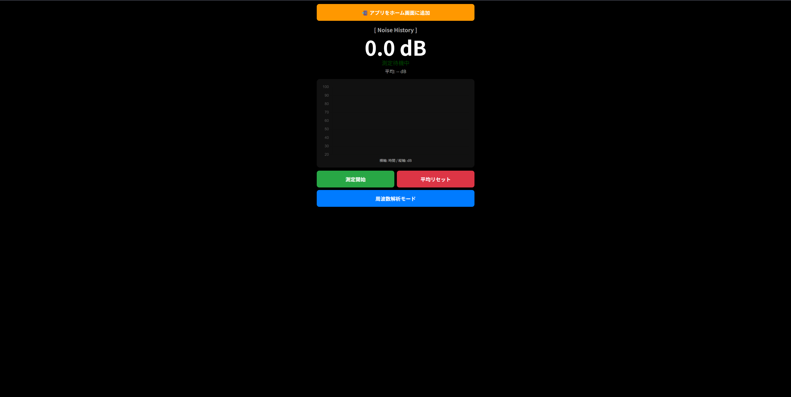

ようこそ
Welcome
私が開発したアプリケーションとプロジェクトを紹介します。
Here act showcase of my applications and projects.

DarkModePDF
PDFをダークモードに変換し、保存できるAndroidアプリ。
Android app to convert PDFs to dark mode and save.
Google Playを見る View on Google Play

DarkModePDF on Web/PWA
Webブラウザ上で動作するDarkModePDF。PWA対応。
DarkModePDF running on web browsers. PWA supported.
アプリを開く Open App

